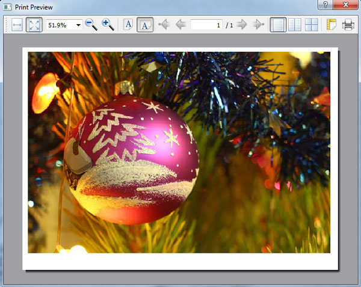

На этом шаге мы рассмотрим назначение, форматы конструктора и использование этого класса.
Класс QPrintPreviewDialog выводит документ в стандартном диалоговом окне предварительного просмотра (рисунок 1).

Рис.1. Стандартное диалоговое окно предварительного просмотра документа
Иерархия наследования этого класса:
(QObject, QPaintDevice) - QWidget - QDialog - QPrintPreviewDialog
Конструктор класса QPrintPreviewDialog имеет следующий формат:
<Объект> = QPrintPreviewDialog([parent=None] [, flags=0]) <Объект> = QPrintPreviewDialog(<QPrinter>[, parent=None][, flags=0])
Первый формат создает диалоговое окно, привязанное к используемому по умолчанию принтеру, второй формат позволяет указать нужный нам принтер в виде экземпляра класса QPrinter. Необязательный параметр parent может быть использован для задания родителя, а необязательный параметр flags - для установки типа окна (смотри 25 шаг).
Вывод документа для предварительного просмотра с помощью класса QPrintPreviewDialog выполняется в три этапа:
- Создание экземпляра класса QPrintPreviewDialog.
- Назначение сигналу paintRequested(<QPrinter>) этого экземпляра обработчика, внутри которого и будет выполняться вывод документа. Как видим, обработчику сигнала в параметре передается указанный в вызове конструктора принтер, так что вывести документ мы сможем без труда.
- Вывод диалогового окна на экран вызовом метода ехес() или ехес_() экземпляра класса QPrintPreviewDialog.
Переделаем утилиту печати изображений, чей код приведен в 307 шаге, таким образом, чтобы дать пользователю возможность просматривать изображения перед печатью. Исправленный код приведен ниже.
from PyQt5 import QtCore, QtWidgets, QtGui, QtPrintSupport import sys class MyWindow(QtWidgets.QWidget): def __init__(self, parent=None): QtWidgets.QWidget.__init__(self, parent, flags=QtCore.Qt.Window | QtCore.Qt.MSWindowsFixedSizeDialogHint) self.setWindowTitle("Печать изображений") self.printer = QtPrintSupport.QPrinter() self.printer.setPageOrientation(QtGui.QPageLayout.Landscape) self.file = None vbox = QtWidgets.QVBoxLayout() btnOpen = QtWidgets.QPushButton("&Открыть файл...") btnOpen.clicked.connect(self.openFile) vbox.addWidget(btnOpen) btnPageOptions = QtWidgets.QPushButton("Настройка &страницы...") btnPageOptions.clicked.connect(self.showPageOptions) vbox.addWidget(btnPageOptions) btnPreview = QtWidgets.QPushButton("П&росмотр...") btnPreview.clicked.connect(self.preview) vbox.addWidget(btnPreview) btnPrint = QtWidgets.QPushButton("&Печать...") btnPrint.clicked.connect(self.print) vbox.addWidget(btnPrint) self.setLayout(vbox) self.resize(200, 100) def openFile(self): self.file = QtWidgets.QFileDialog.getOpenFileName(parent=self, caption="Выберите графический файл", filter="Графические файлы (*.bmp *.jpg *.png)")[0] def showPageOptions(self): pd = QtPrintSupport.QPageSetupDialog(self.printer, parent=self) pd.exec() def preview(self): pp = QtPrintSupport.QPrintPreviewDialog(self.printer, parent=self) pp.paintRequested.connect(self._printImage) pp.exec() def print(self): pd = QtPrintSupport.QPrintDialog(self.printer, parent=self) pd.setOptions(QtPrintSupport.QAbstractPrintDialog.PrintToFile | QtPrintSupport.QAbstractPrintDialog.PrintSelection) if pd.exec() == QtWidgets.QDialog.Accepted: self._printImage(self.printer) def _printImage(self, printer): painter = QtGui.QPainter() painter.begin(printer) pixmap = QtGui.QPixmap(self.file) pixmap = pixmap.scaled(printer.width(), printer.height(), aspectRatioMode = QtCore.Qt.KeepAspectRatio) painter.drawPixmap(0, 0, pixmap) painter.end() app = QtWidgets.QApplication(sys.argv) window = MyWindow() window.show() sys.exit(app.exec_())
Как видно из рисунка 1, диалоговое окно предварительного просмотра дает возможности перехода со страницы на страницу, масштабирования выведенного документа, указания режима его вывода (постранично, по две страницы и т. п.), задания ориентации страницы, вызова диалогового окна настроек страницы, а также отправки документа на печать непосредственно отсюда.
На следующем шаге мы рассмотрим класс QPrintPreviewWidget.